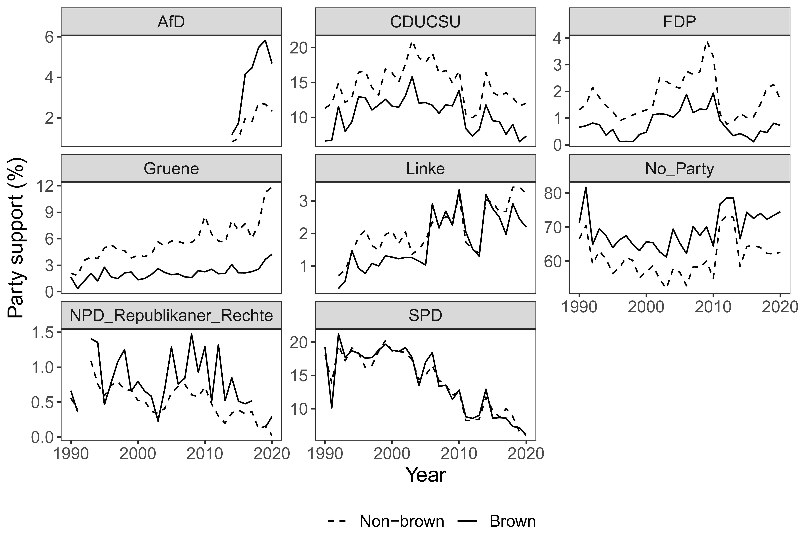
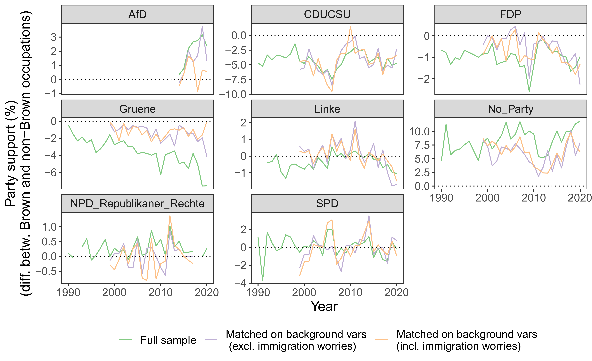
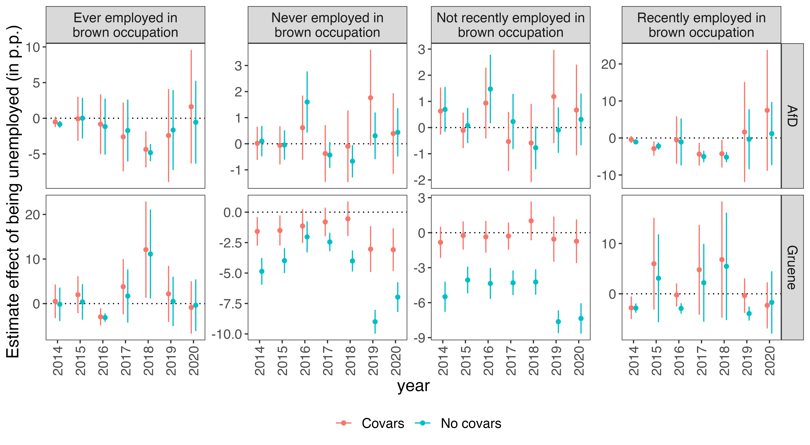
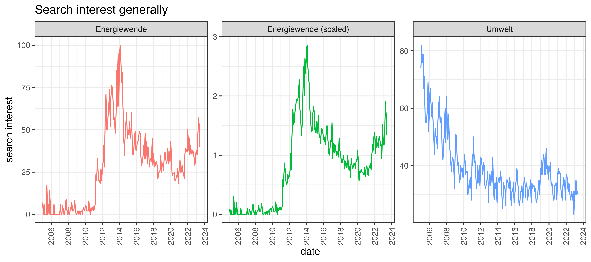
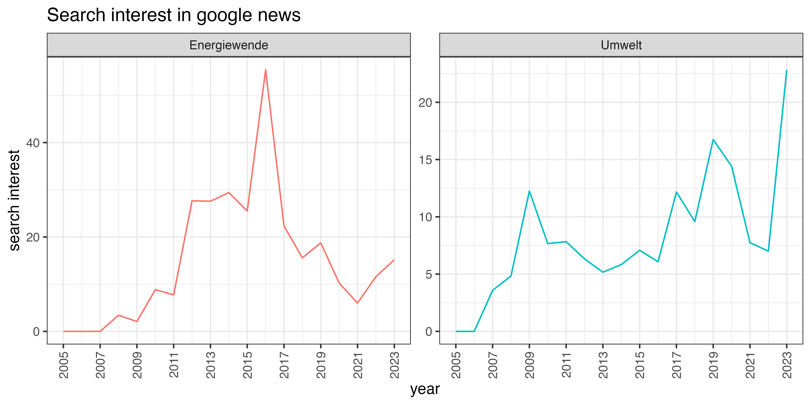
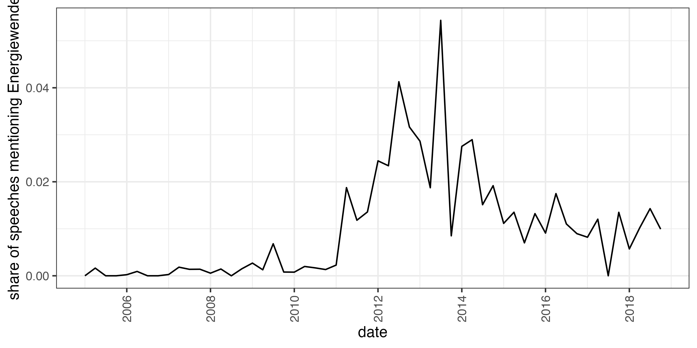
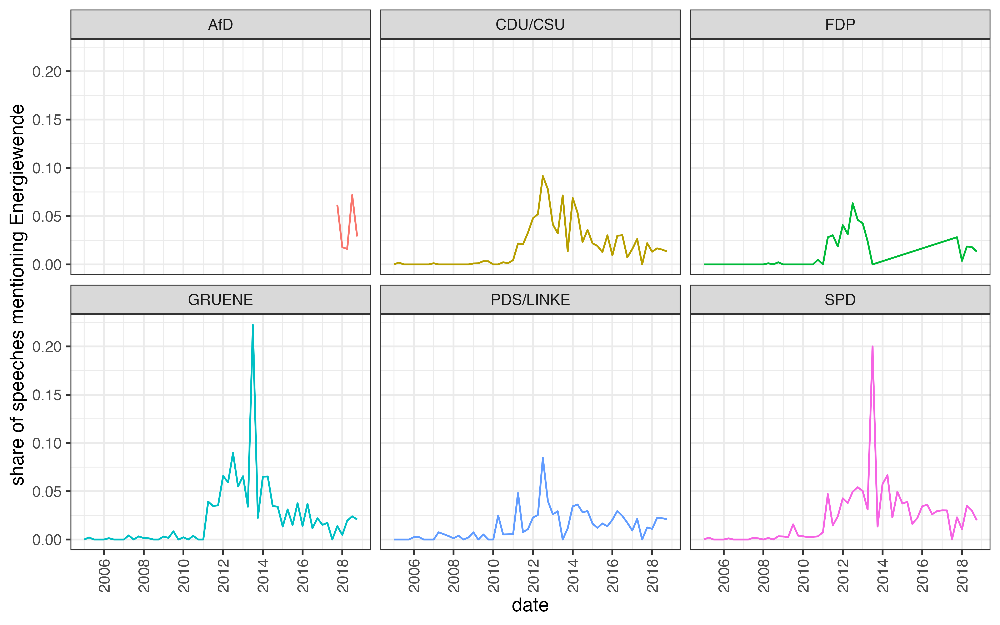
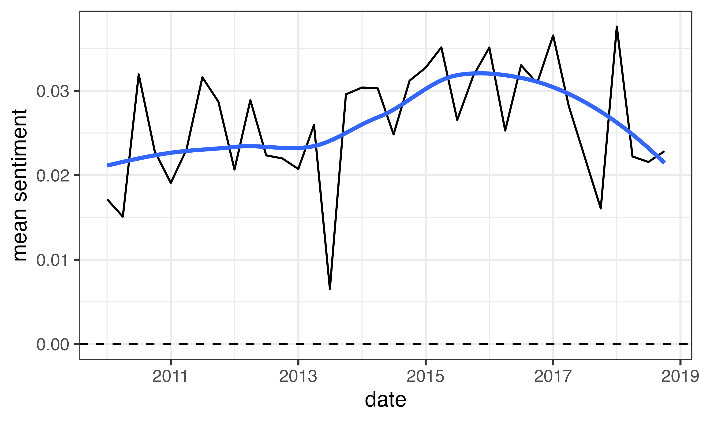
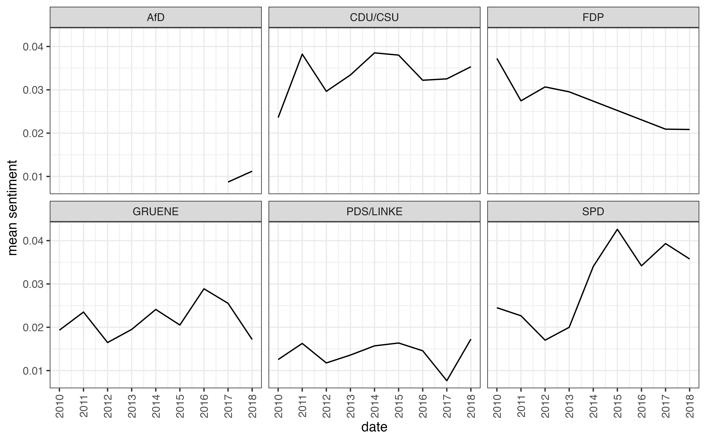
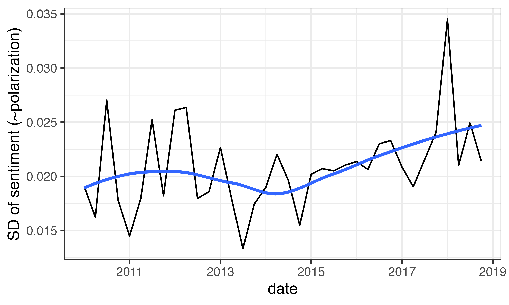

Report
Key takeaways
Employees in brown occupations
- Brown job workforce shrank from 10% in 1990 to under 5% by late 2010s.
- Brown employees typically male, less educated, younger, but do not necessarily earn less.
- Brown employees tend to support all parties less, except AfD.
- Over 60% of sample, disproportionately brown employees, support no major party.
- Brown employees show rising AfD support, declining Greens support, and a increasing trend of non-support.
- Conditioning on background variables, especially immigration worries, greatly reduces partisan support differences between brown and non-brown employees.
- Political effect of unemployment conditional on having been employment in Brown jobs: no clear patterns to me
Energy transition prominence:
- Interest in the term “Energiewende” significantly increased from 2010, peaking around 2014. (Google Trends)
- Google News searches followed this trend, beginning to rise in 2010 and reaching a peak in 2016.
- Bundestag speeches saw a surge in “Energiewende” mentions from 2012 to 2014, after sparse mentions until 2011.
- SPD and Greens made noticeably more mentions of “Energiewende” in 2013, potentially linked to campaign activities.
Details:
Note that all plots except the first are conditional on being employed.
Differences in background variables

Party support (not adjusted for differences in background vars)

Differences in party support (adjusted for differences in background vars)
Adjustment variables are age, sex, ISCED, income and worries about immigration.

Effect of unemployment on party support, conditional on having been employed in a brown occupation
The model regresses party support on a dummy for unemployed, and does this separately for people who used to be employed in a brown occupation, and those that were not employed in a brown occupation.
There are two diffferent definitions of having worked in a brown job – (i) ever, or (ii) recently, where “recent” employment is defined as within the last 2 years. Covariates are age, sex, ISCED, income and worries about immigration.

Trends in energy transition searches


Trends in energy transition mentions in Bundestag speeches
 
Sentiment and polarization in Bundestag speeches
Sentiment analysis is conditional on a speech mentioning the word Energiewende at least once
Mean sentiment

Mean sentiment by party over time

SD of sentiment (~polarization)
